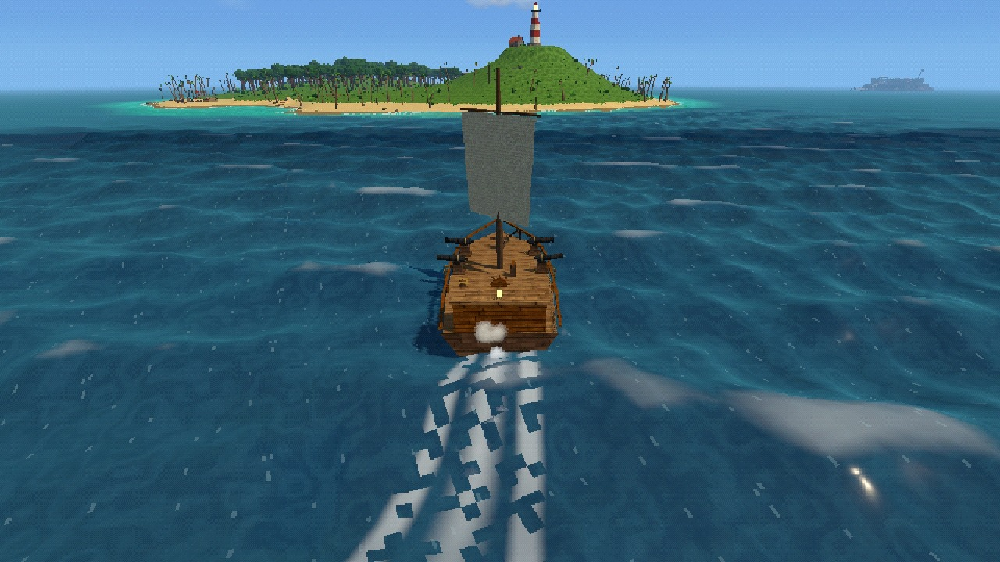

What's out there
- Fight like a shonen hero. Cutlass, katana, boarding axe, pistols or fists, each with its own combos, techniques and ultimate.
- Eat a Devil Fruit. Ember, Vine or Wolf: fire fists, grapples and swings, or a beast form. You can't swim once you do.
- Sail your ship. Trim the sails, man the cannons, board a pirate brig and take her prize. Patch the hull when it goes wrong.
- Follow the log pose. An island chain built from your world's seed: camps, caves, villages, a beast on each island and the sea between.
- All of it made in code. Bodies, islands, ships, textures, music and sound, drawn the way a PS1 would: wobbly vertices, dithered colour, a low pixel grid.
Controls
| Move | W A S D | Look | Mouse |
|---|---|---|---|
| Sprint | Shift | Jump | Space |
| Light / heavy attack | Left / right click | Dodge roll | C (Left Ctrl on desktop) |
| Parry / block | Q | Interact, talk | F |
| Ready weapon | Z | Skills / ultimate | 1 - 4 / R |
| Quick items | 5 - 7 | Inventory | Tab / I |
| Skill map | K | Sea chart | M |
| Log pose (hold) | L | Summon ship (hold) | B |
| Menu | Esc | Fullscreen | Alt+Enter |
Desktop build
The Windows build runs the full renderer and has co-op for up to four captains (one hosts, friends join by address).
About the browser build
Same game, drawn with the browser's WebGL renderer. Co-op is desktop-only for now. Your saves live in this browser, so clearing site data clears them. The first visit downloads the whole game; later ones start quicker.